Tutorial by Frank Nimphius, Oracle
May 2019, Oracle Digital Assistant version 19.1.3
Custom components for Oracle Digital Assistant are developed using JavaScript and Node.js. In this tutorial you learn how to debug custom component services in the context of a bot conversation in Oracle Dgital Assistant.
Before You Begin
Following the instructions in this tutorial, you debug and fix a problem in a custom component that provides bot users with a quote-of-the-day. In particular, you learn
How to run custom components in a local Node express server using the Oracle Bots Node.js SDK.
How to register custom components that run on a local Node server in Oracle Digital Assistant.
How to connect JavaScript IDEs such as Microsoft Visual Studio Code to the node server running on your local machine.
How to debug custom components in the context of a bot conversation.
What Do You Need?
This tutorial is for developers who are familiar with JavaScript and Node.js. To complete this tutorial, you must meet the following requirements
You need a JavaScript IDE installed that supports Node debugging. For example, this tutorial uses Microsoft Visual Studio Code in its screen shots and instructions.
You must have Node.js and Node Package Manager (NPM) installed for global access. If you used a Node installer (Windows, Mac) both executables, node and npm should be available to you. To test if you have Node.js and NPM installed, open a terminal window and try the following commands seperately: node -v, npm -v
Download the quoteoftheday.zip file containing the custom component sources.
Importing Or Cloning The Quote Of The Day Skill
The provided 'Quote Of The Day Skill' skill hosts the custom component service. You use the skill to explore the custom component functionality and during debugging. If you work in your own Oracle Digital Assistant instance, you need to import the provided skill. In a shared environment, e.g. when in a training, the skill may already exit. In this case you need to clone the skill as explained in the next section.
If in your own environment: Import the skill
If the 'Quote Of The Day Skill' skill does not exist, select this link to download the QuoteOfTheDaySkill(1.0).zip> skill.
Open the Oracle Digital Assistant dashboard in a browser using the following URL <your instance url>/botsui.
Select the menu icon on the top-left of the page next to the "Oracle Digital Assistant" label ().
Select the Skills option in the Development category.
Again, click the menu icon in the top-left of the page to close the menu ().
Click the Import Skills button located at the top right (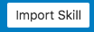).
On your computer, browse to the location you saved the downloaded QuoteOfTheDaySkill(1.0).zip file to.
Select the QuoteOfTheDaySkill(1.0).zip file and click Open to upload and install the "Quote Of The Day Skill" skill.
Locate the "Quote Of The Day Skill" skill and open it with a mouse click onto the "Quote Of The Day Skill" tile.
Note: If you cannot find the "Quote Of The Day Skill" skill, then try and use the filter field above the New Skill tile to find it.
If in a shared environment: Clone the starter skill
If you follow this tutorial in a shared Oracle Digital Assistant instance, like in a training, you should check first if the "Quote Of The Day Skill" skill exists already. If it does, clone the skill instead of importing it. The reason is that you can only import a skill once with a specific name.
Open the Oracle Digital Assistant dashboard in a browser using the following URL <your instance url>/botsui.
Select the menu icon at the top-left of the page next to the "Oracle Digital Assistant" label ().
Select the Skills option in the Development category.
Click on the menu icon at the top-left of the page to close the menu ().
If you cannot spot the "Quote Of The Day Skill" skill, try and use the filter field above the 'New Skill' tile to find it. If still you cannot find it, import the skill as explained in the previous section.
To clone the "Quote Of The Day Skill" skill, use the Clone menu option of the "Quote Of The Day Skill" skill shown in the image below.
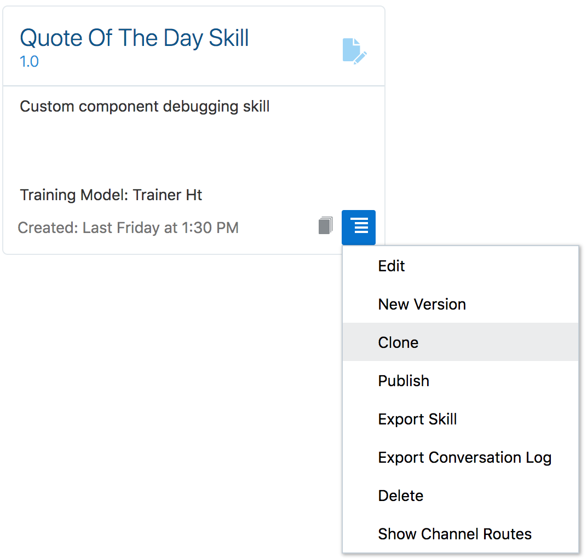
In the opened dialog, provide a display name with your initials in it (e.g. "FN Quote Of The Day Skill").
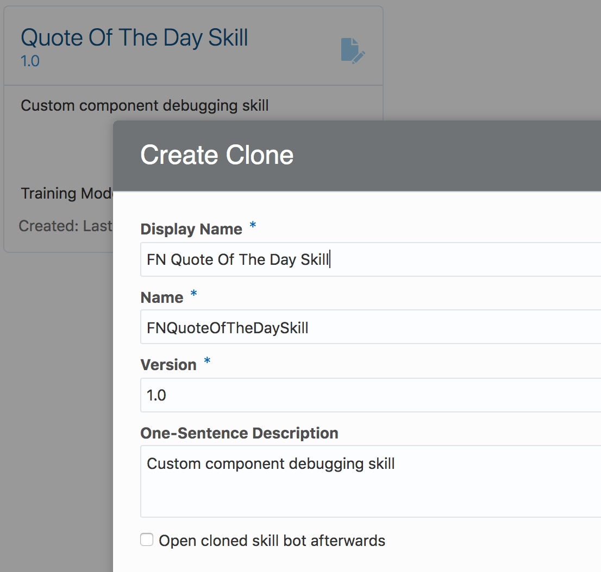
Provide a short description.
Click the Create button for Oracle Digital Assistant to create the skill.
Exploring The Quote Of The Day Skill
Open the "Quote Of the Day Skill" skill (or your cloned copy).
Select the conversation tester icon ().
Type hi into the Message field and press the enter-key on your keyboard.
When prompted, provide a name.
You should see a message similar to the one below:
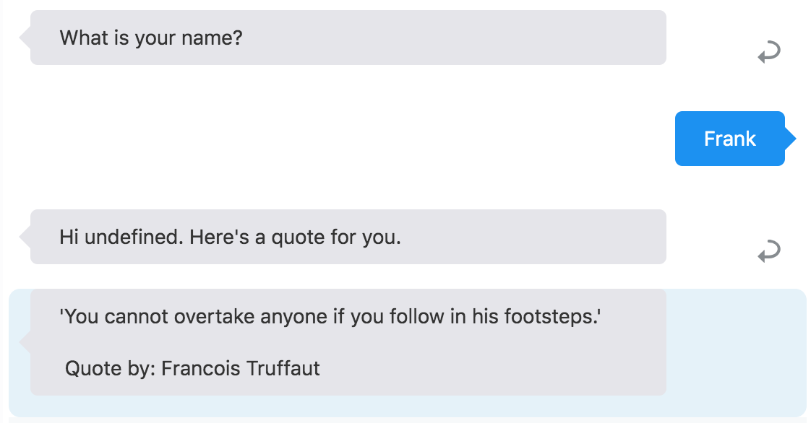
Notice that, though you provided a name, the bot response contains undefined in the welcome message.
Reset the tester ().
Close the tester ().
Open the dialog flow builder (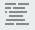).
Note the askName state (line 11) that prompts the user for a name.
The getQuote state (line 16) passes the provided user name as an input argument to the custom component.
Note: At first glance, the dialog flow code seems to be correct. Therefore, the problem that the specified name does not print must be in the custom component.
Open the Components registration panel ().
Notice the locally deployed custom component:
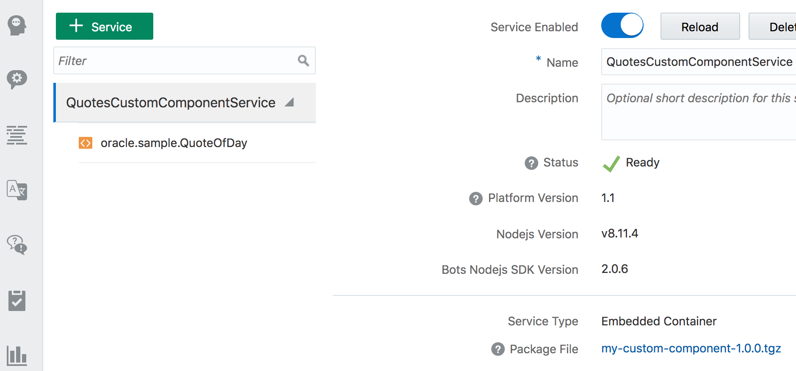
Running The Custom Component On Your Computer
To debug the custom component, you must first run it on your local computer. That way, you'll later have a local process you can connect to from Microsoft Visual Studio Code IDE or your favorite JavaScript IDE. The full custom component service source code is provided in the quoteoftheday.zip file that you downloaded as part of the pre-requisites for this tutorial.
On your computer, browse to the location you saved the downloaded quoteoftheday.zip custom component service file to. 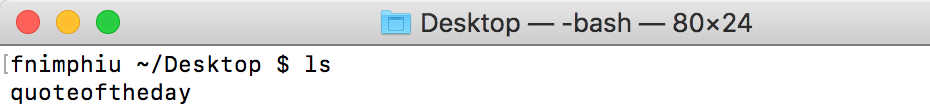
Unzip the file in a folder that does not contain blanks in its name and path.
Open a terminal window (or a command line) and navigate to the parent folder that hosts the quoteoftheday folder.
If not done before, ensure you install the Oracle Bots Node.js SDK. The installation steps are as follows:
If your Internet access is through a proxy, do the following to be able to access the Oracle Bots Node.js SDK from the Internet:
npm config set proxy http://external_ip:80 npm config set https-proxy http://external_ip:80
Note: Alternatively find a way to access the Internet not using a proxy, e.g. using a mobile hotspot.
To install Oracle Bots Node.js SDK for global access, , type
npm install -g @oracle/bots-node-sdk
Note: On a Mac, you use the sudo command: sudo npm install -g @oracle/bots-node-sdk
To verify the success of your installation, type bots-node-sdk -v. The command should print the Oracle Bots Node.js SDK version.
Still in the folder that hosts the quoteoftheday custom component service folder.
Issue the following command: bots-node-sdk service quoteoftheday 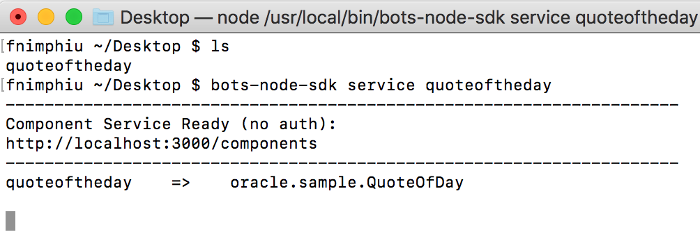 Note: The bots-node-sdk service quoteoftheday command starts the Oracle Bots Node.js SDK embedded Node express server to run the custom component. The express server is part of the custom component service project. It gets added when following the custom component development instructions documented in the Custom Component Development and Backend Integration tutorial.
Open a browser window.
Type the following URL into the URL field: localhost:3000/components.
You should see a server response as shown in the image below: 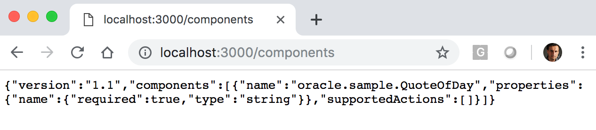 Note: What you see is the custom component metadata definition. It is the same information Oracle Digital Assistant reads when registering custom component services in a skill. If successful, it proves that the Node express server is up and running and that the custom component is accessible.
Note that by default, the Node Express server listens on port 3000. You can change the port number with the following command: bots-node-sdk service quoteoftheday --port port_number.
For example, use bots-node-sdk service quoteoftheday --port 4000 to start the Node express server on port 4000
Exposing The Component Service To The Internet
Usually, your local computer is not available as a server to the Internet. To do this, you'll need to create a network tunnel for which you'll use ngrok in this tutorial. This section assumes that the Node Express server listens on port 3000.
Download ngrok (https://ngrok.com/download). For this tutorial, the free ngrok offering will suffice.
To get past security possible warnings, you may need to open this link in a private window (Firefox) or icognito window (Chrome).
Important: Before using ngrok, ensure you read up on what it is and what it does (https://ngrok.com/) to understand how it works and the possible risks. Be sure to adhere to your company security policies.
Note: If ngrok doesn't work for you, you may try other tunnelling solutions like localtunnel on GitHub. Unfortunately, if you do not own the computer you are working on, and if your IT administrators do not allow you to use tunnelling software, you are not be able to complete this tutorial. In this case, logging is the only option you have to debug custom component services.
Navigate to the location you installed ngrok to.
Now launch ngrok:
Non-Windows:
./ngrok http <port>
Windows:
ngrok http <port>
The screenshot below shows an ngrok process that was started to listen om port 3000. Notice the Session Status field showing "online", as well as the Forwarding URLs for http and https requests. 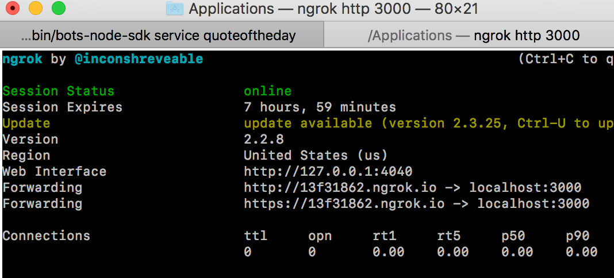
Open a browser window, type the forwarding URL for https into the URL field and append the URL with /components. The request should display the custom component's self-description as shown in the image below.
Note: Your ngrok forwarding URL will differ from the URL shown in the image above. A new URL is generated each time you stop and start ngrok.
Configuring The Remote Custom Component Service
To debug the custom component service, you will create a second component registration in the skill. The registration will use the "external" configuration option to reference the component service running on your local computer.
In the skill builder, select the custom component service registration icon located in the left side menu ().
Press the + Service button to create a new custom component service registration.
Enter QuotesDebugging into the Name field.
Provide a brief description in the Description field.
Set the radio button below the Description field to External.
Set the Metadata URL field value to your ngrok URL with the '/components' extension. Its the same value you used to test the ngrok configuration in a borwser.
The ngrok URL is not protected. So set the User Name and Password fields to None. The configuration should look similar to the one shown in the image below. Note that your ngrok URL will be different from the one shown in the image. 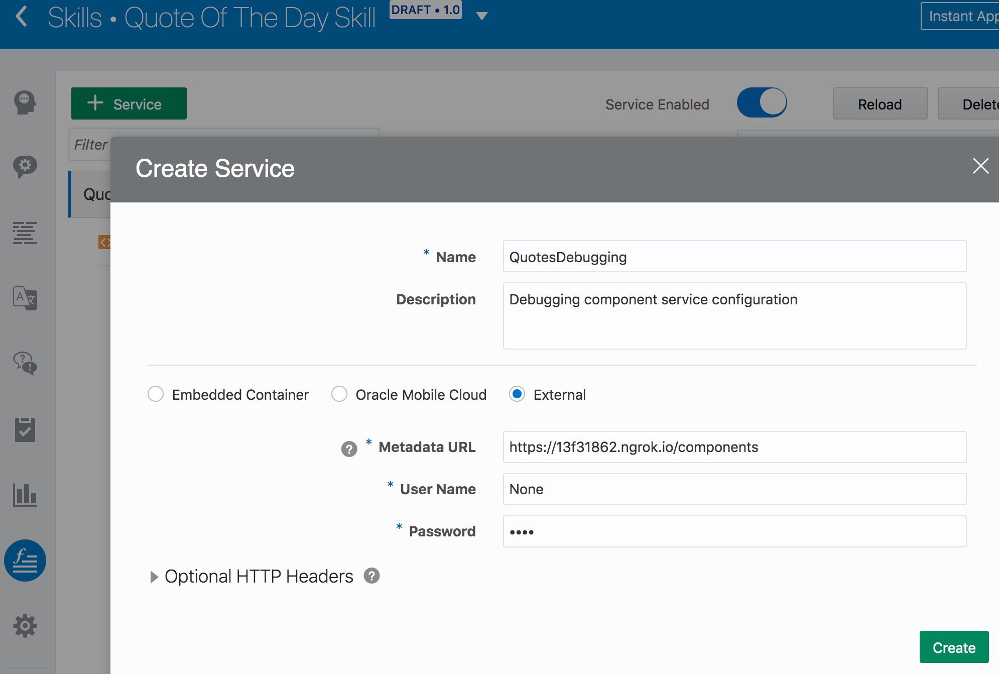
Press the Create button. The skill now attempts to access your local custom component service to register its component(s). Upon registration success, the custom component service panel should look as shown in the image below. 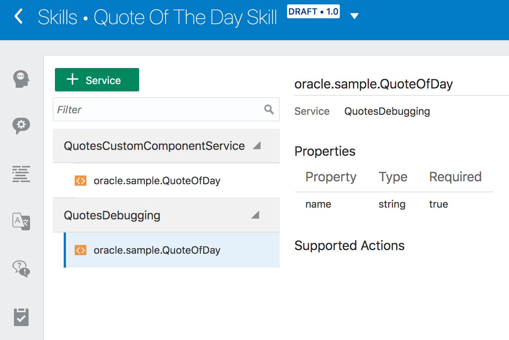
At this moment you have the same custom component service configured twice. To debug the custom component service running on your local computer, you need to disable the existing component service deployed to the local container. Select the QuotesCustomComponentService as shown in the image below (Notice the small vertical blue line next to the QuotesCustomComponentService indicating the selection). 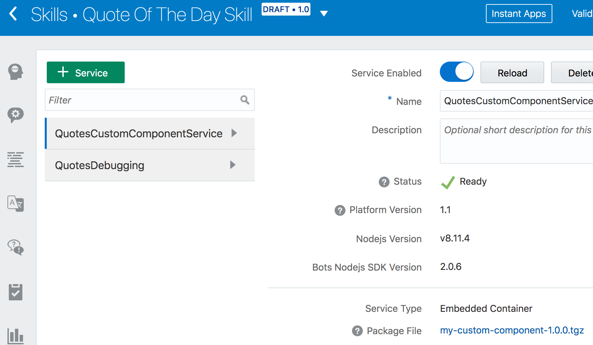
Switch the Service Enabled toggle so it shows disabled (as shown in the image below).
Next, test the remote custom component service. For this select the Tester () icon located in the left side menu.
Type Hi into the Message field.
When prommpted, provide a Name, e.g 'Frank'.
If your remote custom component service works, you should see a quote similar to the one shown in the image below. Again, notice the "Hi undefined" message, which is the same error you saw when testing the custom component service deployed in the local container.
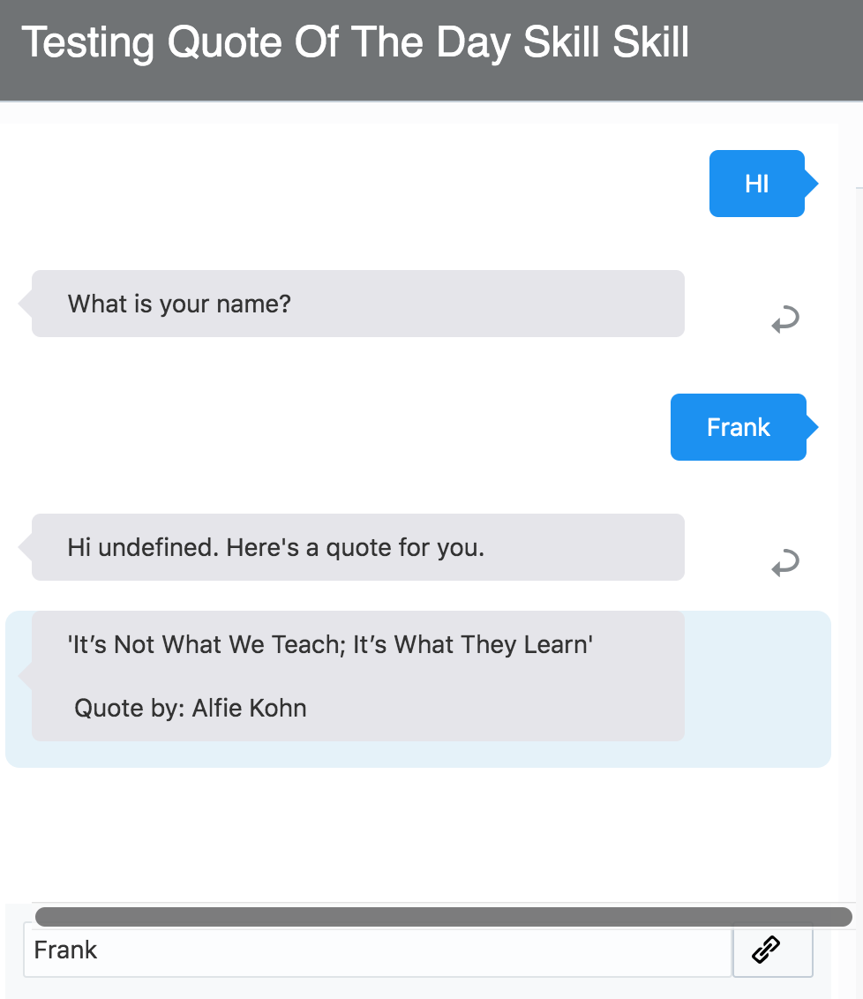
Click the Reset button in the tester to clear the conversation ().
Navigate back to the terminal window (or command line) in which you started the custom component service's Node express server. You should see log messages similar to the ones shown in the image below. Notice that the log message too displays User name: undefined 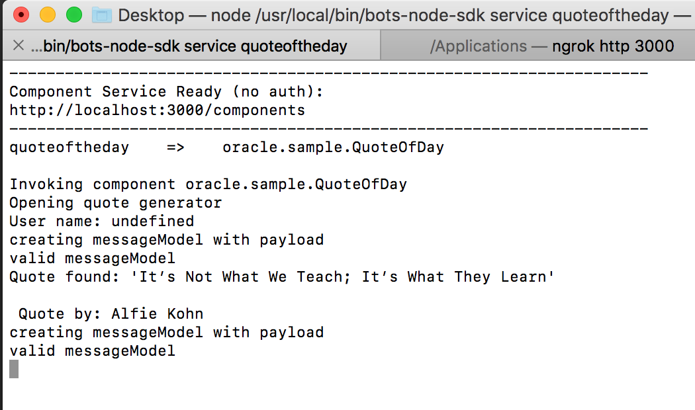
What you just did: Following the instructions in this section, you created a configuration for the "quoteoftheday" custom component service running on your local computer. You then tested the remote deployed custom component service to ensure it is working and that the problem of the name not printing shows here too.
Configuring Microsoft Visual Studio Code for Debugging
Microsoft Visual Studio Code is the JavaScript IDE used in this tutorial. Debugging Oracle Digital Assistant custom component services is not dependent on a specific JavaScript IDE. Actually, any IDE that supports Node.js debugging will do.
Open the JavaScript IDE (Microsoft Visual Studio Code in the following).
Choose File -> Open and navigate to the quoteoftheday project folder. Select the quoteoftheday folder and click on the Open button. 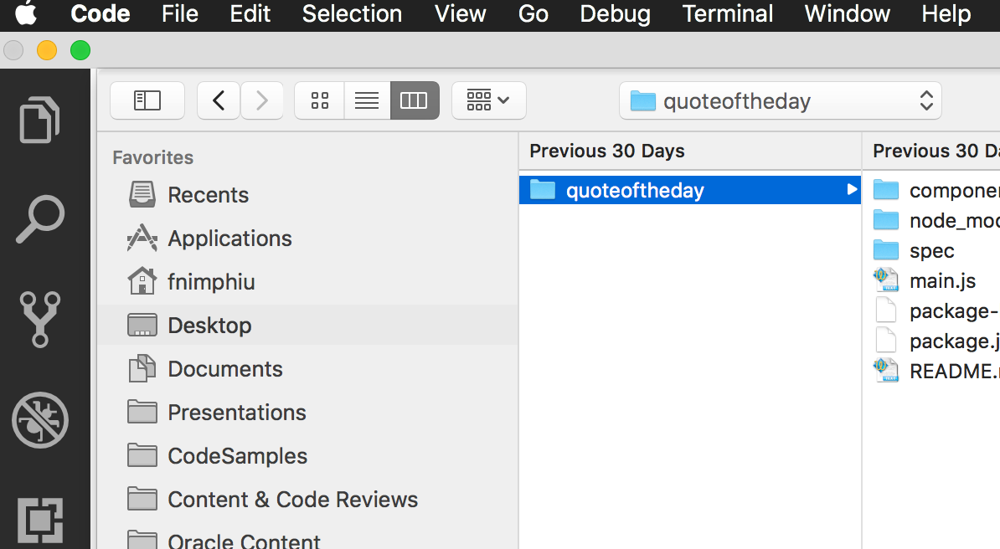
In Visual Studio Code, select the debugging icon () in the left side menu.
Expand the DEBUG setting, which at the moment displays 'No Configurations'. 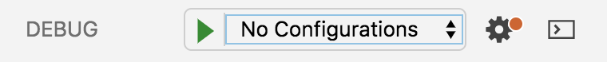
Select the Add Configuration option. 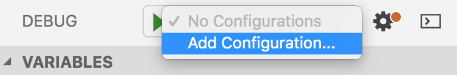
In the opened dialog, select the Node.js option as shown in the image below. 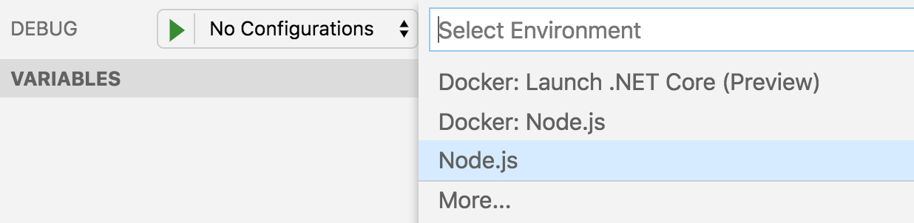
In the opened tab, select the Add Configuration button. 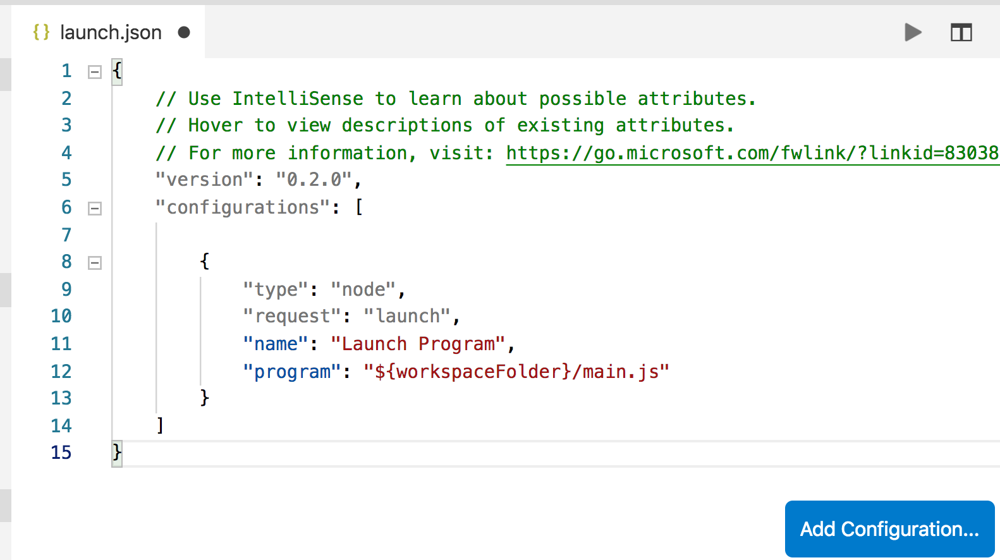
In the opened dialog, select the Attach to Process option. 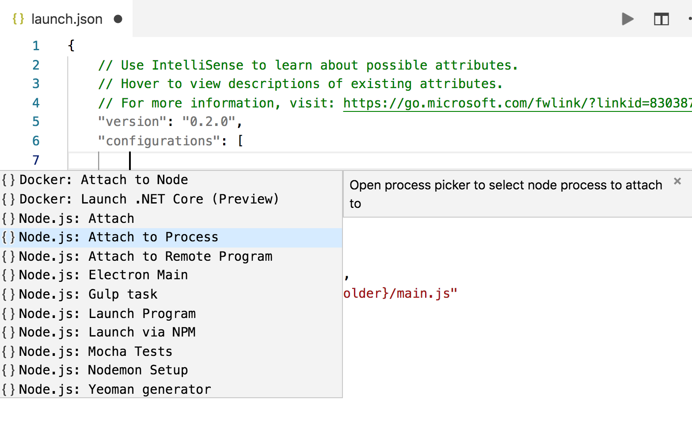
Start Debugging
If you followed the instructions in this tutorial closely, you meet the following prerequisites for debugging custom components:
The quoteoftheday custom cmponent service is running in the local Node express server (default port is 3000).
Your local machine is accessible from Oracle Digital Assistant using ngrok or a similar technology.
You created an external custom component service registration that points to the custom component service running on your local computer.
You opened the quoeoftheday custcom component service project in your preferred JavaScript IDE (Microsoft Visual Studio Code in this tutorial) for debugging.
Connecting the debugger to the custom component service process
In Microsoft Visual Studio Code, you click on the debugging icon () in the left side menu.
Ensure the Attach by Process Id option is selected as the DEBUG option. 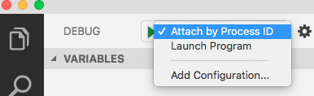
Click the green run icon. 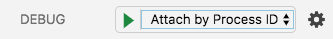
Select the quoteoftheday service in the opened dialog. 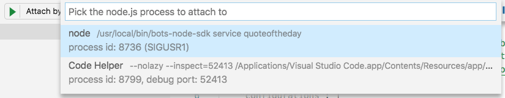
Debugging the custom component code
Select the Explorer icon ().
Expand the components node and select the QuoteOfDay.js file entry. 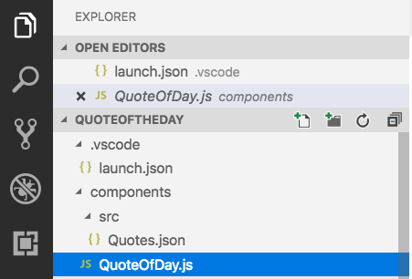
Set a breakpoint in line 25. For this, in Microsoft Visual Studio Code, you need to click into the marging area at the left of the line number. 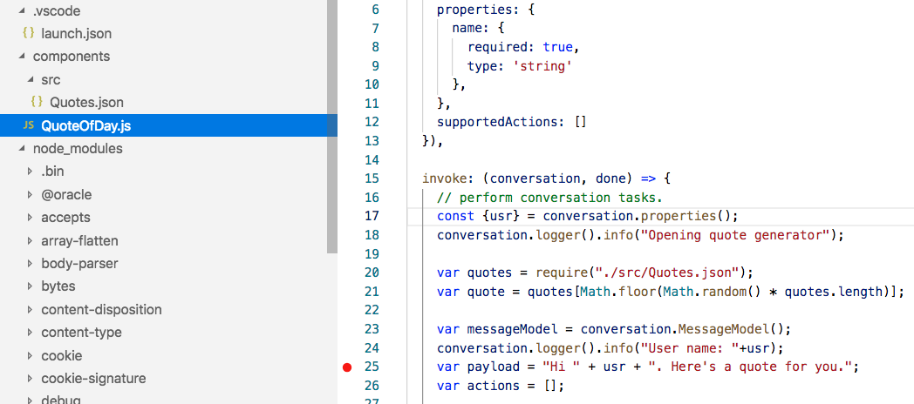
Go back to the Quote Of The Day Skill skill you should still have open in the browser.
Run the embedded conversation tester by clicking the tester icon ().
Type hi>into the Message field and press the enter-key.
When prompted, provide a name.
Switch back to the JavaScript IDE. The breakpoint should show highlighted as shown in the image below for Microsoft Visual Studio Code. 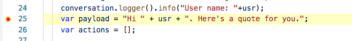
Hover the mouse over the usr variable in line 25. An overlay popup should open with the string undefined in it.
In line 25, click on the usr variable name to see all of its uses. The goal is to find the variable definition (which is in line 17, as shown in the image below). 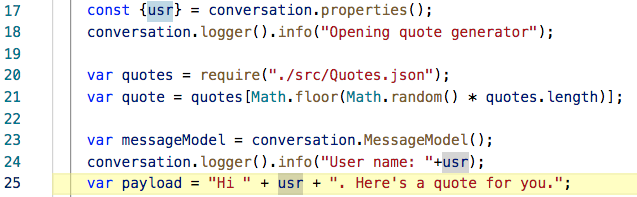
In line 17 you can see that the usr variable value is read from conversation.properties();. So it is safe to assume that the problem is within this call.
In line 17, hover the mouse cursor over the conversation variable name. The conversation handle is a reference to the custom component SDK and contains all information passed in the bot request message payload.
In the opened popup dialog, expand the _request node as shown in the image below. 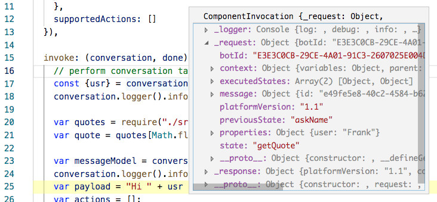
Expand the properties node. Notice a property with name user that has a value of "Frank". Apparently there is no property named "usr", but one named "user". This means you found the problem in the custom component code. 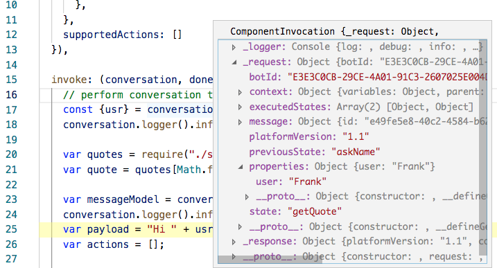
To fix the problem, rename the usr string in the variable definition to user. To do this in Microsoft Visual Studio Code, select the usr variable with the right mouse button and choose Change All Occurences from the opned menu. 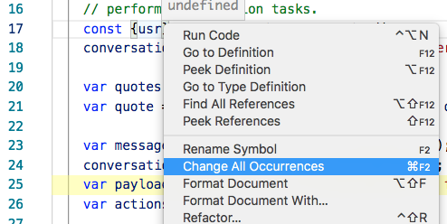
Change the name from usr to user. 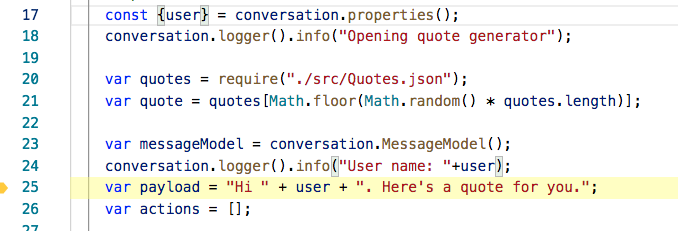
Save the changes.
What you just did: Following the hands-on instructions in this section, you debugged the custom component and identified the problem to be a misspelling of the "user" input parameter propperty. After correcting the misspelling you need to re-test the custom component.
Retesting the Custom Component
Before you can retest the custom component, you need to restart the Node express server that runs the custom component service on your local machine. The restart is required for the code changes to take effect. You don't need to restart the tunneling software (e.g. ngrok in this tutorial).
Go to the terminal window (or the Windows command line) you used to launch the quoteoftheday custom component service.
Stop the process by pressing the ctrl+c keys on your keyboard.
Restart the services by issuing the bots-node-sdk service quoteofthedaycommand. 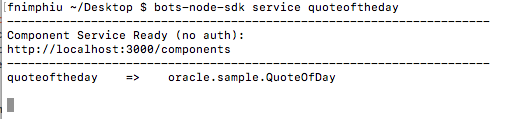
In Microsoft Visual Studio Code, click on the debugging icon () in the left side menu.
Ensure the Attach by Process Id option is selected as the DEBUG option.
Click the green run icon to restart the debugger.
Select the quoteoftheday service in the opened dialog.
Go back to the Quote Of The Day skill in the browser.
If the embedded conversation tester is not open, click the tester icon ()
The previous debugging session most like has expired. Press the Reset button in the tester () to clear the conversation.
In the Message field, type Hi.
When prompted, provide a name and press the enter-key.
In the Javascript IDE, use the mouse and hover over the user variable in line 25. You should see the name you provided. 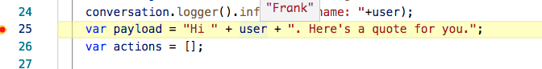
Finish debugging by clicking on the Continue button in the debugger toolbar (first icon on the left in the image below), or press F5. 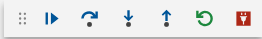
Navigate back to the conversation tester in the skill. You should see a message similar to the one in the image below. Notice that the provided name is included in the bot response. 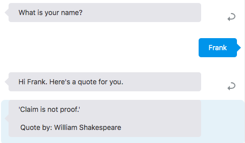
Reset the tester ().
Close the tester window.
Housekeeping
Now that the problem is solved, you can close the following terminal processes and software:
Stop ngrok (or similar tunnel). Use ctrl+c to close the tunnel. For security reasons it is recommended to immediately close the tunnel software when no longer needed.
Stop the Node express server that runs the local custom component service using ctrl+c .
Close the JavaScript IDE.
Re-Deploying And Testing The Custom Component
Re-deploying the custom component service to the local container
Open a terminal window and navigate to quoteoftheday folder.
To package the custom component service project for deployment, issue the following command: npm pack. 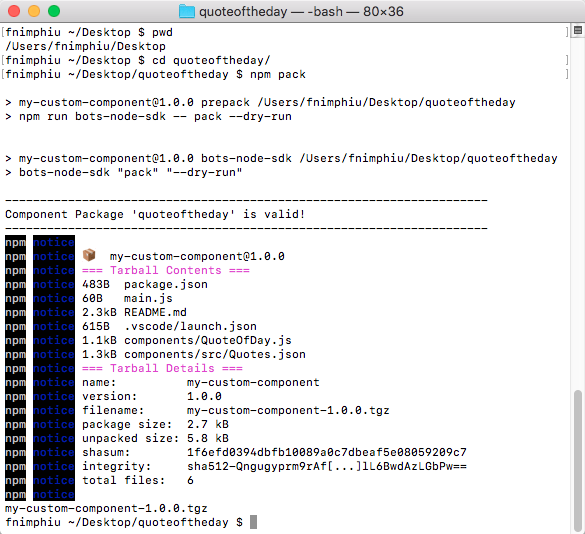
Go to the Oracle Digital Assisant skill in the browser.
Click the Components icon ().
Select the QuotesCustomComponentService component service registration. 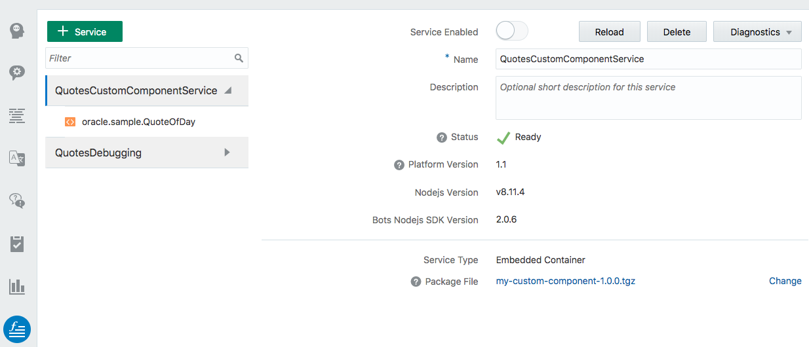
Click the Change link.
In the opened dialog, navigate to the quoteoftheday folder and select the my-custom-component-1.0.0.tgz file. 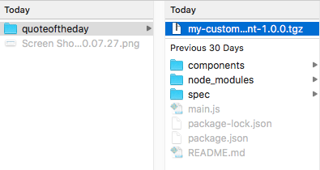
Press the Open button to re-deploy the custom component service.
Note: Re-deploying the custom component service also enables the Service Enabledtoggle.
Next, select the QuotesDebugging component service registration you used for debugging.
Press the Delete button to remove the debugging registration. 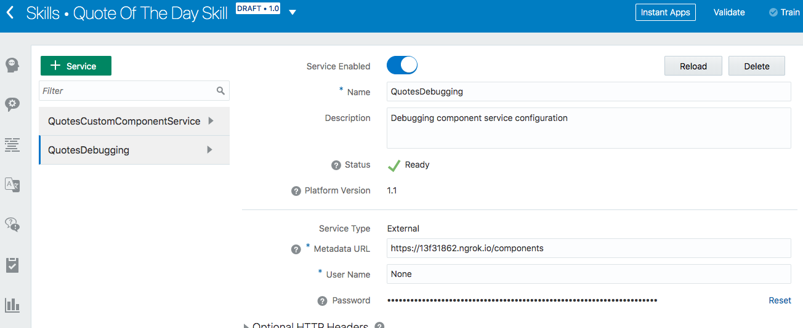
Once deleted, you should a single registered component. 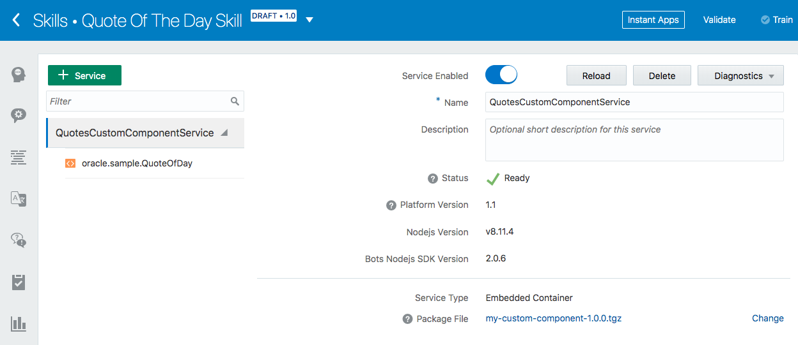 Note: If you want to keep the custom component service you used for debugging, you can switch the Service Enabled toggle so it shows inactive. For this to work, don't stop the tunnelling software and the local Node express server until you disabled the service registration.
Testing the re-deployed component
Though you've seen the error being corrected at the end of the debugging session, the final prove is when you see the same after deploying the fix back into the skill local Node container.
Press the Tester () icon in the left side menu.
Type Hi into the message field.
When prompted, provide a name.
The bot response should contain the provided name in a similar message as shown in the image below. 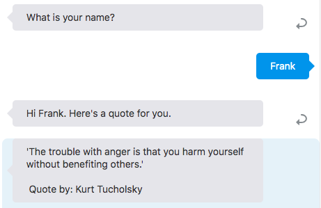
What you just did: You completed the full custom component debugging and re-deployment cycle. In this tutorial you learned how to run a custom component service on a local computer that is exposed to the Internet. From a skill in Oracle Digital Assistant you then accessed the locally deployed component service for the bot to route the conversation to the local component. Setting break points in the custom component source code you learned how to introspect the bot message payload and how to find and fix the custom component coding problem.
 Custom Component Service Local Debugging
Custom Component Service Local Debugging Before You Begin
Before You Begin Importing Or Cloning The Quote Of The Day Skill
Importing Or Cloning The Quote Of The Day Skill ).
). 
 Exploring The Quote Of The Day Skill
Exploring The Quote Of The Day Skill ).
). ).
). ).
). Running The Custom Component On Your Computer
Running The Custom Component On Your Computer Exposing The Component Service To The Internet
Exposing The Component Service To The Internet
 Configuring The Remote Custom Component Service
Configuring The Remote Custom Component Service
 ) icon located in the left side menu.
) icon located in the left side menu. Configuring Microsoft Visual Studio Code for Debugging
Configuring Microsoft Visual Studio Code for Debugging ) in the left side menu.
) in the left side menu. Start Debugging
Start Debugging Re-Deploying And Testing The Custom Component
Re-Deploying And Testing The Custom Component